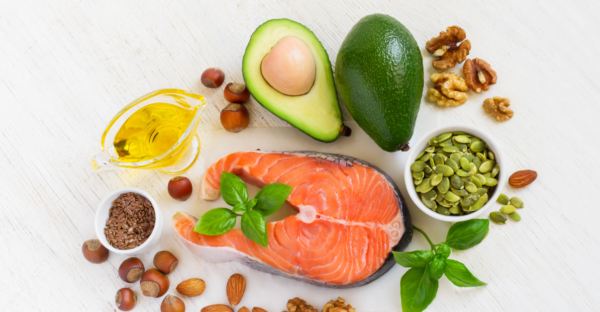

Home
Protein
Carbohydrates
Fats
Form
Fats
What do fats do?
- Fats are essential to give your body energy and to support cell function
- Helps your body absorb vital nutrients such as vitamins
- Is the body's energy provider and energy reserve

Where you can get fats:

Types of Fats:
- Monounsaturated fats
- Polyunsaturated fats
- Saturated fats
- Trans fats
Where Monounsaturated fat and polyunsaturated fat are ‘healthy’ fats which can help to maintain healthy cholesterol levels. While Saturated fat and trans fat are ‘unhealthy’ fats which raise your ‘bad’ cholesterol in your blood.